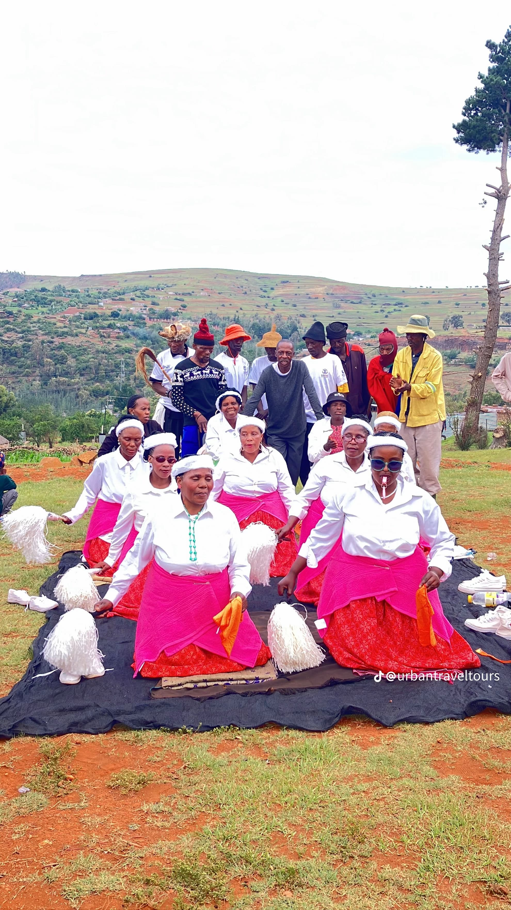
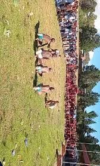

About the Festival
The Lesotho Cultural Games Festival was created to preserve and promote traditional Basotho games. These games have been passed down from generation to generation and play an important role in cultural identity. On Africa Day 2026, we come together to celebrate our rich heritage.
Traditional Games of Lesotho

Mokhibo
Performed by: Baroetsana (Young women)
A graceful dance expressing elegance and cultural pride. Young women perform this dance during celebrations and important ceremonies.

Ts'iphu
Performed by: Bashanyana (Young boys)
A stick-fighting game symbolizing bravery and skill. This traditional martial art teaches discipline and respect.
Litolobonya
Performed by: Bomme (Women)
A traditional activity performed by women during community gatherings and celebrations, showcasing unity and joy.
Target Tourists
This event is ideal for:
- 🌍 Cultural tourists from around the world
- 📚 Students and researchers interested in African traditions
- 👨👩👧👦 Families looking for educational entertainment
- 🎒 Backpackers exploring Lesotho's heritage
- 📸 Photographers and content creators